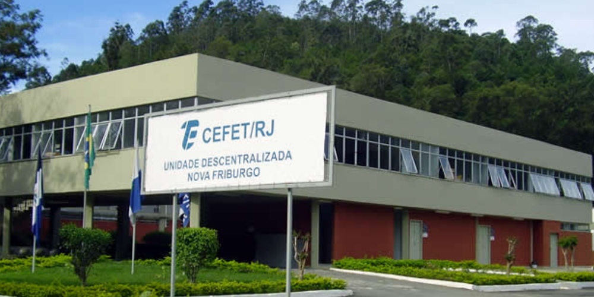

Linhas de Pesquisa
Grupos de Pesquisa
Publicações
Orientações
Mestrado
-
Kesia Olímpio Braga Mamede, Rafael Escalfoni, Jonice Oliveira.
Apoiando Parcerias entre Empreendedores em Ecossistemas de Startups
. Programa de Pós-Graduação em Informática - PPGI-UFRJ, 2021.
Graduação
- Irlon de Souza Lamblet, Marcela Barboza Câmara, Rafael Escalfoni.
Gestão de Colaboração Científica Utilizando Métricas de Análise de Redes Sociais
. CEFET/RJ Nova Friburgo, 2021.
-
Arthur Tavares Cardoso, Vinícius Oliveira Siqueira, Rafael Escalfoni.
Uma Plataforma de Gestão para Agricultores Familiares
. CEFET/RJ Nova Friburgo. Em andamento.
Bancas
Mestrado
-
Leonardo Marinho, Mônica Ferreira da Silva, Jonice Oliveira.
Maná: Um Método para auxiliar Recomendações de Recrutamento em um Ecossistema de Startups
. Programa de Pós-Graduação em Informática - PPGI-UFRJ, 2022.
-
Mauro Pedra, Mônica Ferreira da Silva.
DevOps: Perspectivas de Adoção nas Organizações
. Programa de Pós-Graduação em Informática - PPGI-UFRJ, 2020.
-
Nathália Miranda do Nascimento, Mônica Ferreira da Silva.
Engenharia de Requisitos Ágil Centrada no Usuário: Proposta de Modelo Integrativo a partir de uma Pesquisa Multimétodo
. Programa de Pós-Graduação em Informática - PPGI-UFRJ, 2020.
Graduação
-
Cleyton da Cunha Gomes, Marcos Fialho.
Telemetria de Equipamentos Industriais para a Indústria 4.0.
CEDERJ Niterói, 2022.
-
Patrick Rodrigues Sardou, Helder Yukioo Okuno, Bruno Freitas.
Análise de Usabilidade e Acessibilidade do Aplicativo MulseBook Audio.
CEFET/RJ Nova Friburgo, 2022.
-
Anthony de Souza Abreu, Bruno Freitas.
Clima Organizacional em uma Equipe de Desenvolvimento de Software de uma Organização de Nova Friburgo: um Estudo de Caso.
CEFET/RJ Nova Friburgo, 2020.
Qualificações
-
Pedro Augusto Kasprozykowski Leone, Dalmo Stutz.
Desenvolvimento de um Jogo Eletrônico: Aventuras de X
. CEFET/RJ Nova Friburgo, 2022.
Outras Atividades